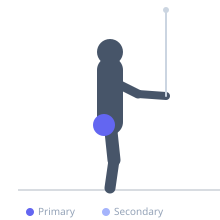
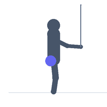

Exercise guide / Standing Cable Hip Abduction — Lateral Lean
Standing Cable Hip Abduction — Lateral Lean
A hip abduction exercise using a low cable pulley in which the exerciser leans laterally away from the working leg to increase the hip abduction arc and change the angle of the resistance relative to the hip joint. The lean position shifts more of the load onto the gluteus medius and reduces tensor fasciae latae contribution compared to the standard upright cable abduction. Used in gluteus medius isolation programming and hip abductor rehabilitation.
Primary muscles
gluteus medius
gluteus minimus
Secondary muscles
tensor fasciae latae
Stabilizers
erector spinae
internal oblique
Equipment
Cable Machine (Low Pulley)


Starting position
- Attach an ankle cuff to the right ankle and connect to the left low cable pulley. Stand facing the cable stack with the right ankle crossing over or beside the left. Lean the torso slightly to the right (away from the working leg).
Setup
- Hold onto the machine frame or a support with the hand on the side of the working leg. The lean should be approximately 10-20 degrees from vertical.
Steps
- Step 1: Attach the ankle cuff and lean slightly to the working-leg side. The cable crosses in front of the body.
- Step 2: Raise the working leg outward in abduction, moving it away from the midline and slightly behind.
- Step 3: Hold the top position for 1-2 seconds, squeezing the outer glute.
- Step 4: Lower slowly under control. Repeat, then switch sides.
Coaching cues
- Feel the outer glute contracting — not the hip flexors or IT band
- The lean should feel like it stretches the glute of the working leg
- Slow the return — the eccentric loading through the cable is constant all the way down
Breathing
- Exhale as you raise the leg. Inhale as you lower.
Range of motion
- Raise to the point where hip abduction ends — approximately 30-45 degrees from midline.
Tempo
- 2s lift, 2s hold, 3s lower.
Common mistakes
- Using the lean to gain extra range rather than to change the resistance angle — the lean should be modest and stable
- Swinging the leg with momentum — controlled lift only
- Using too much weight that forces compensation through the lower back
Safety
- The lean requires lateral trunk stability — do not lean so far that balance is compromised
- If lower back pain occurs during the leaned position, reduce the lean angle or perform the standard upright version
Training
- hypertrophy: 12–20 reps
- hypertrophy: 2–4 sets
- Rest: {'hypertrophy': 60}